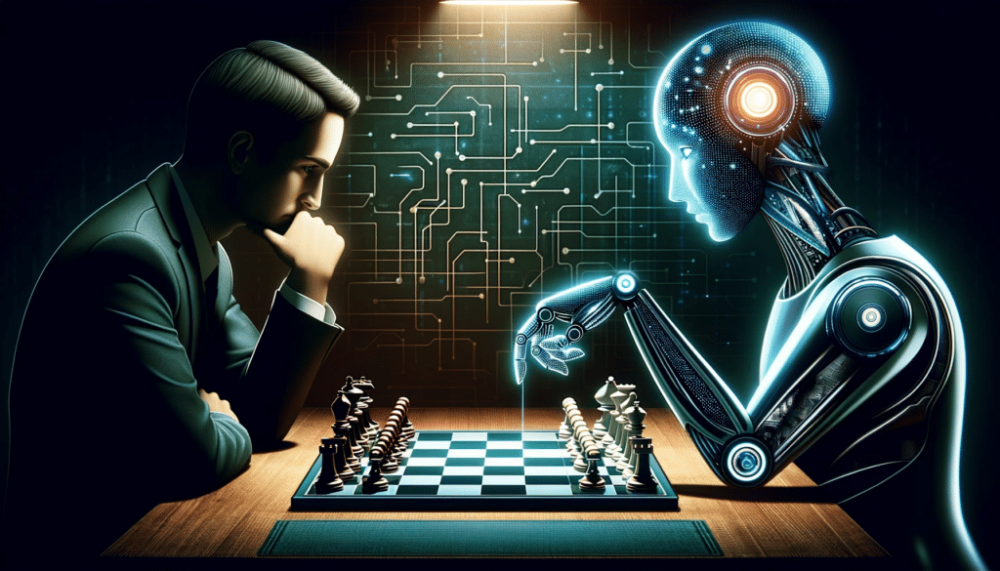

Cliquez pour revenir à la page d'accueil
L'intelligence artificielle générale (IAG), souvent abrégée en AGI (pour Intelligence Artificielle Générale), représente une forme avancée d'intelligence artificielle qui démontre une capacité à comprendre, apprendre et accomplir une variété de tâches intellectuelles de manière similaire à un être humain. Contrairement à l'intelligence artificielle étroite, qui est conçue pour effectuer une tâche spécifique, l'AGI aspire à une compréhension large et adaptable, similaire à celle des êtres humains.
L'objectif de l'AGI est de créer des systèmes autonomes capables de résoudre des problèmes complexes, d'apprendre de l'expérience, de s'adapter à des environnements variés et de réaliser une gamme étendue de tâches cognitives. Il s'agit essentiellement de doter les machines d'une intelligence similaire à celle des êtres humains, avec la capacité de généraliser leurs connaissances et leurs compétences à des contextes nouveaux et inconnus.
Le développement de l'AGI soulève des défis majeurs, tant sur le plan technique que sur le plan éthique. Les chercheurs et les experts en intelligence artificielle travaillent à résoudre des problèmes complexes tels que la compréhension du langage naturel, la résolution de problèmes abstraits, l'apprentissage autonome et la prise de décision éthique. L'impact potentiel de l'AGI sur la société, l'économie et la vie quotidienne soulève également des questions cruciales liées à la sécurité, à la confidentialité et à l'éthique, nécessitant une réflexion approfondie et une régulation appropriée.
Yann Le Cun [ləkœ̃], né le 8 juillet 1960 à Soisy-sous-Montmorency, est un chercheur en intelligence artificielle et vision artificielle français. Il est considéré comme l'un des inventeurs de l'apprentissage profond. Il reçoit le prix Turing 2018, le 27 mars 2019, partagé avec Yoshua Bengio et Geoffrey Hinton. Un chercheur en intelligence artificielle et l'un des pionniers du domaine des réseaux de neurones convolutionnels (CNN)
Geoffrey Hinton, né le 6 décembre 1947 à Wimbledon, est un chercheur canadien spécialiste de l'intelligence artificielle et plus particulièrement des réseaux de neurones artificiels. Il fut membre de Google Brain et est professeur au département d'informatique de l'université de Toronto. Un pionnier dans le domaine des réseaux de neurones, ses travaux ont été cruciaux pour l'avancement de l'apprentissage profond.
Andrew Y. Ng, né en 1976, est un chercheur américain en informatique. Il est professeur associé au département de science informatique de l'université Stanford. Son travail concerne principalement l'apprentissage automatique et la robotique. Un chercheur en apprentissage automatique, co-fondateur de Google Brain, et impliqué dans des initiatives éducatives liées à l'IA
Demis Hassabis est un entrepreneur et chercheur britannique en intelligence artificielle. Il est le directeur général de DeepMind et d'Isomorphic Labs. C'est aussi un ancien développeur de jeux vidéo, neuroscientifique et joueur de haut niveau dans de multiples disciplines dont les échecs. Co-fondateur de DeepMind, une entreprise spécialisée dans l'intelligence artificielle et surtout connue pour ses travaux sur l'IA appliquée aux jeux, notamment avec AlphaGo